Klang blog
Notes from building Klang: what we measured, what we tried, and what we kept.
25 posts, newest first. A post marked Draft is still being written.
-

The Score So Far
Fourteen optimizations in one table, the song's work and the engine's cost pulled apart on two axes, and what the phone said with the song's weight written next to it
The closing ledger of the series. Every optimization since May with its number, its platform and what it cost in sound, in one table; then the two things the live song's real-time factor mixes, pulled apart. On one engine, every snapshot of Der Schmetterling's text: its work went from 112 passes per block in July to 402 in September, three and a half times, while its real-time factor on that one engine rose by a quarter, because the passes the rigs added are cheap ones. On fixed work, the frozen July song in every run that rendered it: the engine's day-to-day spread is wider than its movement, on the JVM, where the problem was not. The phone's timeline with the song's work underneath it says what "barely" meant on September 15. And what is still open, with what the next hundred passes will cost at today's price.
-
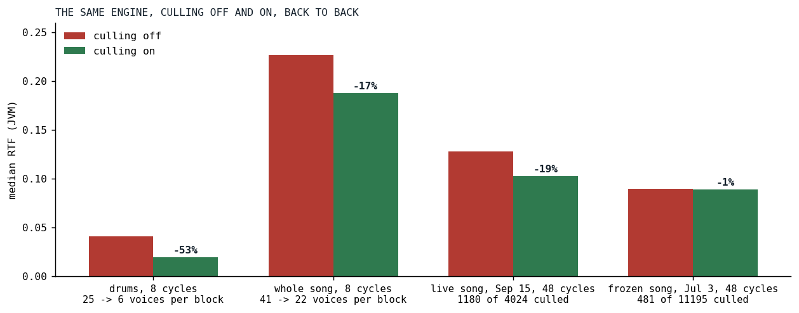
Zombies
A voice that has decayed to silence keeps rendering its whole chain until its scheduled end; stopping it early moved the mix by 28 dB
Every voice in Klangmotor rendered its full chain, oscillator, filters, envelope, sends, until its scheduled lifetime ran out, long after it had decayed to nothing. The sample hats of Der Schmetterling, with a two-second release, were silent for 85 percent of their life. Silence culling measures the voice's own output and stops the rendering once a release has stayed under -100 dBFS for 50 ms. The first build removed the voice from the scheduler at that moment, and a null-diff render of the song came back 28 dB off, because the orbit's owner changed hands in a different order. The fix is the zombie: the voice renders nothing and keeps its slot. Drums 53 percent cheaper, the song 17 to 19 percent, the guitars nothing.
-
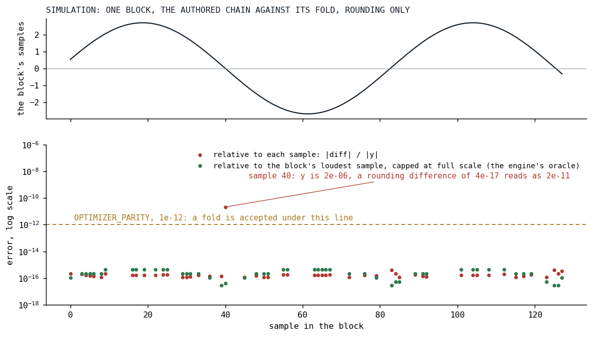
The Promise Is a Margin
The graph optimizer promised bit-identity, which forbade moving a multiply; it now promises a margin with no musical meaning, and a harness that holds every rule to it
Klangmotor's graph optimizer rewrites an instrument's node tree before it renders. Its first rule fused adjacent filters, and its promise was that not one bit of the output changed, a promise that made folding arithmetic impossible. The maintainer replaced it with a margin, one part in a trillion of the block's loudest sample, and the first deliverable under the new promise was not a rule but the harness that would hold every rule to it. Then the Affine node, the rule that folds constant arithmetic into it, and division, subtraction and negation after it. Seven review rounds, one lesson they kept finding, a fuzz seed that moved the definition of the margin, and a measurement that says the folds changed nothing.
-
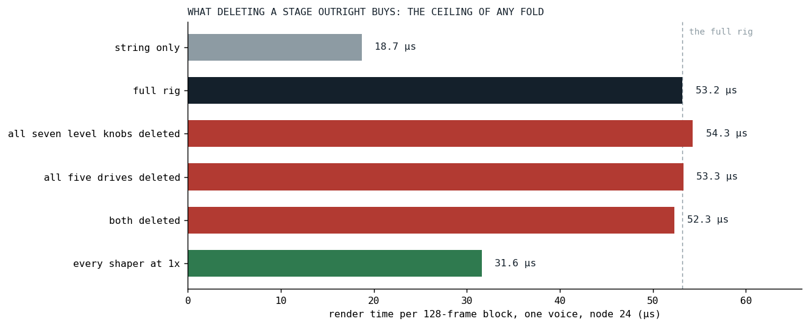
Measure Before You Build
Six benchmark rows said no to two planned optimizations and pointed at a third nobody had planned
The plan said to fold the guitar's level knobs into its equalizer and its drives into its shapers. Before touching ten loop variants, we built the guitar rig as a benchmark row and deleted the nodes outright, which is the ceiling of any fold. The ceiling was four percent. The same rows put two thirds of the rig's cost in the shapers' oversampling, and the decimator rewrite that followed took the guitar voice from 53 to 44 microseconds a block, bit for bit the same sound.
-
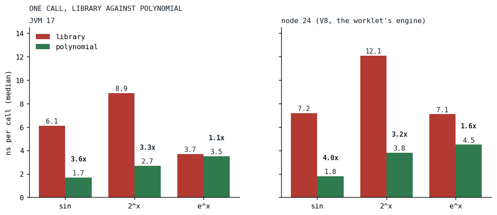
Eleven Digits of Sine
Three transcendentals left the per-sample loops for polynomials, and the one that barely paid says as much as the two that did
An eight-partial sine bank calls the library sine 384,000 times a second per voice, every envelope in Klangmotor calls the library exponential once per sample, and every vibrato calls pow. On V8, the engine that runs the browser's audio worklet, none of these is cheap. A degree-11 minimax sine on the folded half period, a table-and-polynomial 2^x with its ends pinned exact, and e^x through 2^x replaced all three, with errors in the eleventh digit and the sine bit-identical across JVM and JS. Per call the sine got nearly four times faster; the exponential on the JVM barely moved, and a fourth polynomial, the logarithm, was measured and not built.
-
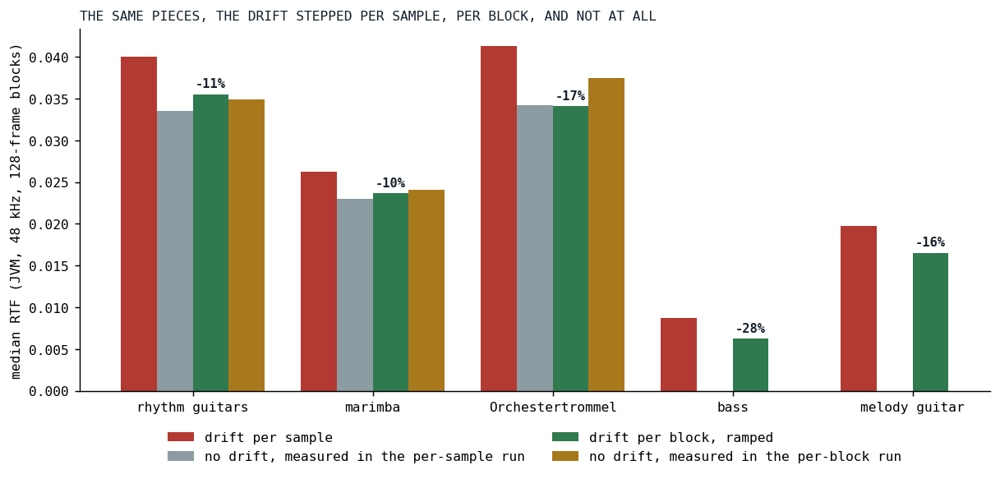
Drift for Free
A pitch wander with a fifty-millisecond time constant was being recomputed forty-eight thousand times a second
The analog drift that keeps Klangmotor's oscillators from sounding like a plastic pipe was stepped once per sample, twenty lanes per guitar note, for a modulation whose fastest layer moves in fifty milliseconds. Stepping every lane once per 128-frame block and ramping the multiplier across the block made the drift cost nothing measurable, took a tenth off the rhythm guitars and the marimba and a sixth off the drum, and turned the Fairphone from "barely" to "smooth" the same evening. Not bit-identical, judged by ear, and with a spectrum that says why the ear was right.
-

Off the End of the Instrument
Four cost models, 161,364 lines, and the 49% we threw away
Someone asked what Klangmotor is worth and whether a company would have built it. We ran four software cost models over the tree, measured what the models cannot see, and found the project sitting five times past the end of the Putnam scale. The models converge on a replacement cost of a few million. They also all miss.
-

Loop Shape Beats Pass Count
Twenty-one block passes were cheaper than one loop, twice, and both times the fix was where a value lived
A seven-harmonic bass in Der Schmetterling was written as seven added partials, each a sine, a multiply and an add: twenty-one passes over every block. The native partial bank that replaced it was slower in its first form, because its loop kept every partial's phase in an array, and faster rewritten so that one partial's phase lives in a register for a whole block. Three days later the same lesson came back in a different coat: one shared container for the analog drift lanes cost a drifting supersaw 16 percent on V8 and nothing on the JVM, because it read four per-block values inside the sample loop. And today's numbers add the part the first day did not know: on V8 the twenty-one-pass tree still beats the bank.
-

Seven Megabytes of Silence
Every orbit allocated a ten-second delay ring at its first touch, on the audio thread, for delays no song ever asked for; the fix is a shelf, a ladder, and a warmup that runs every path before the first note
The first play of Der Schmetterling stuttered on the Fairphone because each of its eight orbits zero-filled a 7.68 MB delay ring inside a callback of under three milliseconds, one after another, for a song with no delay in it. This is the post in the series with no microsecond in it: bytes and a stall, measured by a hand on a phone, four times in one day. Rings became lazy and class-sized, grow by migration with their contents kept, return to a shelf that is stocked by return and not by guessing, and fail as null instead of killing the render thread. Then the stall moved twice, from allocation to construction to cold code, and a warmup vocabulary that executes every node kind in silence is what finally let the first run play.
-

Eleven Loops, One Pass
A guitar's tone chain ran as eleven nodes, each a loop and a scratch buffer; the fused equalizer runs it as one, and the loop shape inside that one was decided by the platform that matters
The guitars of Der Schmetterling were nearly all of the song's cost, and their tone chain, two parallel bandpass boosts, a notch, a tracking highpass and two lowpasses, ran as about eleven separate nodes, each a full loop over the block with its own scratch traffic. EqCore renders a list of filter sections in one pass. Its inner loop was chosen in a three-way bake-off on both platforms, where the JVM and V8 disagreed and V8 decided. The wire node, the authoring surface and the optimizer rule that fuses any adjacent chain bit for bit followed within two days, and on August 20 the phone ran the song at about 75 percent CPU, the plan's opening goal.
-
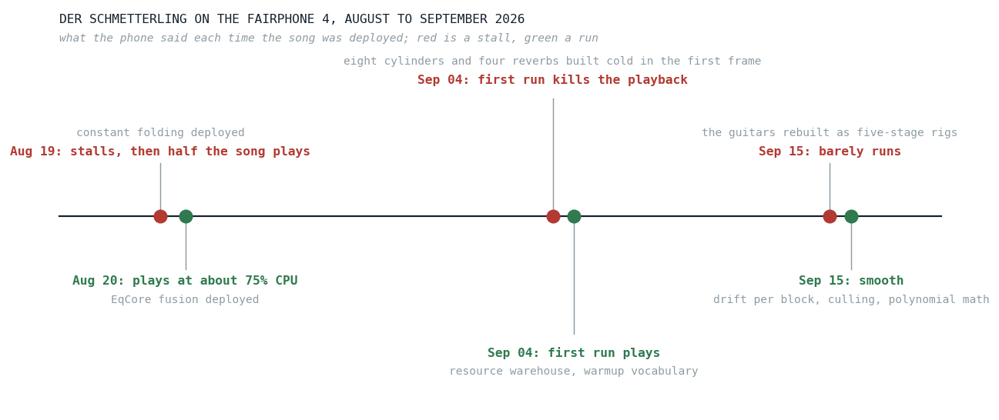
The Phone That Does Not Get Faster
A 2021 Fairphone, a song that keeps growing, and the one number that tells them apart
Klangmotor renders its songs in a browser's audio thread, and the slowest place it has to work is a Fairphone 4 from 2021. The phone stays the same while the songs get heavier, so every added stage has to be paid for inside the engine. This opens a series about how that bill was paid: what the phone said at each step, why the number everyone reaches for lies, and the ledger we built so the next round can be measured against the last one.
-

Half a Song
A one-line override, a fold ladder in two nodes, and fifteen missing overrides: a five percent desktop win that was run-or-not-run on the phone
Every arithmetic node in a Klangmotor instrument graph rendered both of its operands into buffers before combining them, even when one operand was a parameter that could not change within the block. The fix came in three commits on August 19: a memoizing wrapper that had been hiding every composite constant behind a null, a fold ladder in the multiply and add nodes that reads a block-constant operand as one number, and the fifteen node kinds whose missing override killed folding for everything above them. On the desktop the guitar's tone chain got nine percent cheaper and the guitar voice five. On the Fairphone, half of Der Schmetterling ran again. This is the first appearance of the graph optimizer idea in the series: a fold is what you do when you know something at build time that the render loop does not.
-

The Fundamental Lottery
Why every supersaw note was a dice roll, and how we rigged the game
Some notes had bass. Some didn't. The hunt for a randomly hollow guitar took us from spectrograms through Rayleigh statistics to a self-refreshing pool of phase configurations, and fixed every super-oscillator in the engine at once.
-
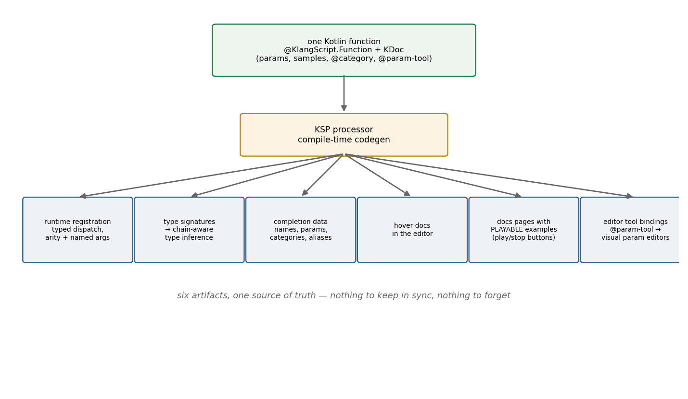
One Annotation, Six Artifacts
How KlangScript's KSP processor turns a KDoc comment into a language surface
Every function a KlangScript song can call is explicitly registered from Kotlin, and the registration, the type signatures, the autocomplete, the hover docs, the visual editor bindings, and the playable documentation examples are all generated from one annotated function and its KDoc. A closer look at the compile-time pipeline the white paper only waves at.
-
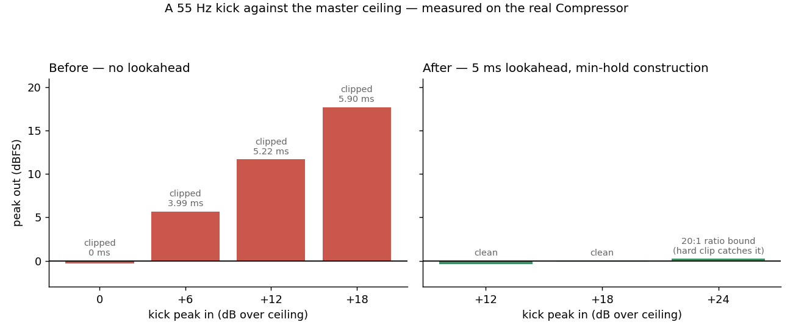
The Limiter That Couldn't See
How a master limiter cracked every big transient, and what it took to give it eyes
Every loud kick left the master stage as a hard-clipped burst: the limiter enforced its ceiling with a clip, not with gain. Adding lookahead alone warned it earlier without making its gain any faster. The fix is a construction borrowed from a 2022 Signalsmith article: moving-minimum, release, two box filters, and a delay, plus a dual release we kept for an unexpected reason.
-

The Same Word Must Mean the Same Thing
An order-of-magnitude bug, and the DSL design principle it bought us
The same reverb size value produced a one-second reverb tail on an orbit and a twelve-and-a-half-second tail on the master bus. The fix took an afternoon; the principle it crystallized is now a standing rule for every parameter that appears on more than one surface, and it includes a rule for the exceptions.
-

The Body That Played a Thousand Times
The first whole-song measurement found a guitar body resonator running once per voice under a nested superimpose; moving it to the orbit cut the busiest block by three quarters
On July 3 the song benchmark was built and pointed at Der Schmetterling for the first time. One guitar, with a nested superimpose, scheduled 1,088 voices and was about half the song's cost, and every one of those voices ran its own eight-band body resonator. A body is a property of the instrument, not of a note, so body and vowel moved from the per-voice filter chain to the orbit bus, once on the summed mix, with the first voice to sound configuring it through a lease and a crossfade covering a live rebuild. The frozen song's median cost fell by a fifth and its busiest block by three quarters, and the measurement that found the problem is the harness the series measures songs with from here on.
-

Killing the Plastic Pipe
A quarter spent hunting warmth: drift, a supersaw rebuilt, and a body that does not ring on its own
By spring 2026 the engine was correct, fast, and cold. Every note was perfect, and perfection was the tell. This is the story of Q2's warmth hunt: a two-timescale Ornstein-Uhlenbeck drift generator (with an inline xorshift32 and a hard-won lesson about seeding), a supersaw rebuilt around an analog flyback, and a passive body resonator measured straight from the engine.
-

Sixty-Seven Microseconds to 385 Nanoseconds
The worklet decoded every scheduled voice with a generic serializer on the audio thread; a generated codec that trusts its input replaced it, and a schema hash guards the one case where trust would be misplaced
A scheduled voice crosses from the page to the audio worklet through a message port, and on the far side, on the audio thread, it was decoded by kotlinx serialization's dynamic decoder at sixty-four to sixty-seven microseconds per voice. ProtoBuf was tried and was slower on Kotlin/JS. A hand-rolled decoder that simply reads the fields it knows are there ran in 398 nanoseconds, and a KSP processor that generates that decoder for every wire type made it 385: 174 times faster, the encode ten times. Because both ends of the wire are one build, the codec can trust its input, and a structural hash of the schema, stamped on every message, catches the one case where they are not.
-

Twenty Allocations per Note
Every pattern modifier copied a 105-field voice object; making it mutable under a single-owner invariant, guarded by a golden of 2,822 events, cut the copies to one per event, and the one that remained is a story about V8
A pattern in Klangmotor's sequencing language is a chain of modifiers, gain, note, filters, effects, and every modifier in the chain copied the event's voice data, a data class of a hundred and five fields, on the way through: on the order of twenty allocations per voice. The fix made the object mutable with a single owner, cloned exactly once where a leaf pattern emits it, and converted 113 setters to mutate in place, with a differential golden of a frozen song standing guard, which caught the one aliasing bug that mattered. The copy that remained cost 820 nanoseconds on V8, and none of the hand-written routes we tried took it lower; a native copy via Object.assign was 22 times slower. What made it smaller was grouping the fields, so that a leaf's empty clusters are one null each.
-
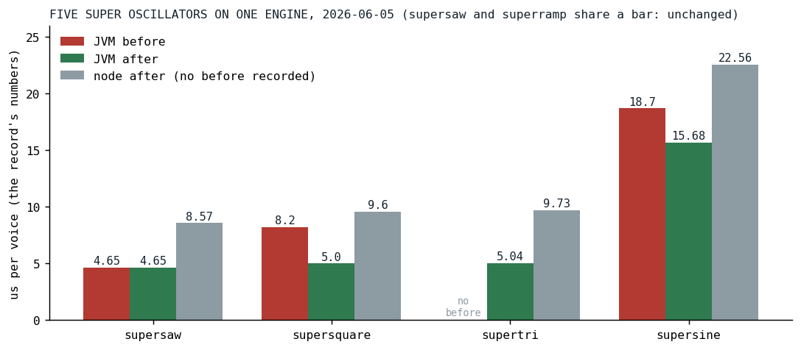
One Engine for Five Waves
Three hand-rolled unison oscillators and two shape functions became one of each, and a control-rate read stopped rendering a whole buffer to take one sample from it
In early June the super oscillators were five oscillators across four classes that had grown apart: saw and ramp on one shared engine, sine, square and triangle each hand-rolled with its own voice bookkeeping, a flat gain and one drift walk for the whole stack. Two shape functions drew the same trapezoid differently. One day of consolidation left one shape function, one unison engine with three small subclasses, and a member on the node interface that lets a block-constant parameter be read as a number instead of rendered into a scratch buffer and sampled. The supersquare went from about 8.2 to 5.0 microseconds per voice, the supersine from 18.7 to 15.7, and the code the rest of the series optimizes is the code this day made.
-

The Triplet That Never Drifted
Musical time went through five representations in five months, from a Double to a fixed point to two rationals to a fixed point again, and the last one made a third exact and a plus under six nanoseconds
A pattern language needs a third of a cycle to land on the third forever, and a Double cannot promise that. Between January and May the sequencer's notion of time was rebuilt four times: a 32.32 fixed point in a Long, in which three thirds are one step short of one; a numerator and denominator pair with a gcd after every operation; the same pair split per platform, with BigInt on JavaScript, where every plus cost 92 nanoseconds; and CycleTime, an integer count of ticks held in a Double with 110,100,480 ticks to the cycle, chosen so that halves to the twentieth power, thirds, fifths and sevenths are all exact. No timing of the change was recorded in May, so this post transplants all three classes into one benchmark today: on node a plus fell from 92 nanoseconds to under six, a sequence step from 186 to five.
-

Growing Our Own Brain
Replacing a language runtime while every song depends on its exact behavior
Klang ran on borrowed Strudel-JS through a GraalVM bridge. Q1 2026 replaced it with our own interpreter and pattern engine, verified by compiling every pattern twice and diffing the event streams against the original, which stayed in the tree as an oracle. On 2026-03-21 the fork got its own name: sprudel.
-
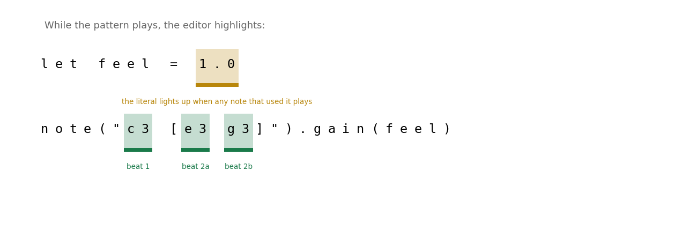
The Position That Survived
How a source location rides from the parser through the pattern engine to a glowing rectangle in the editor
Live coding needs the editor to show what is playing right now, which means every runtime event must know which characters of source text it came from, across an interpreter, a mini-notation parser, a pattern engine, and an audio-worklet wire. Klang's answer: locations ride the values themselves. Even a constant defined as "let feel = 1.0" lights up when it plays.
-
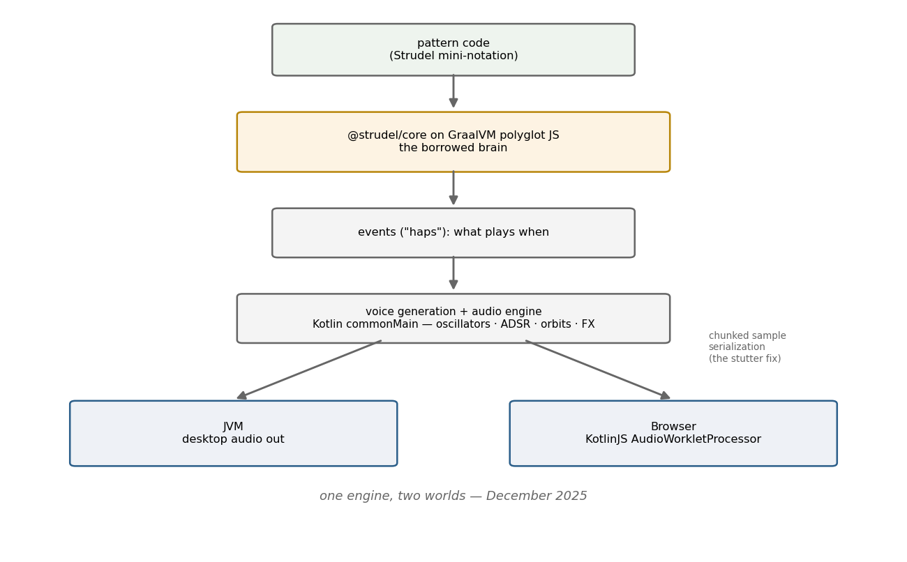
First Sound
One synthesizer, two worlds, and a borrowed brain: how klang began
Klang started with a bet: one audio engine that runs the same on the JVM and in the browser, driven by a pattern language borrowed, for a time, from Strudel via GraalVM. This is the story of the first quarter, the first sine wave, and the three scars that shaped what came after.